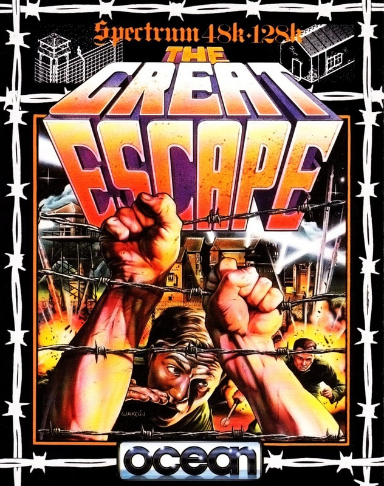
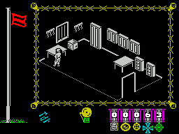
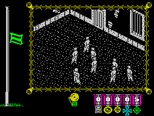

The Great Escape


{kind=link}

| Publisher: | Ocean |
| Price: | £7.95 |
| Year: | 1986 |
| Source: | CRASH, Issue 35 |

Denton Designs have been rather quiet recently, but with a pedigree that includes Frankie Goes to Hollywood and Shadowfire, they’re back in the fray with a game for Ocean.
You play an English POW trying to escape from a German camp in the last war. The main screen display reveals a section of the scrolling prison compound — or if you are indoors the room is shown from the usual 3D game angle. To begin with it’s a good idea to leave the controls well alone — the hero goes about the daily grind of prison life with the other prisoners and you get an idea of what’s going on. A normal day consists of parades, meals and exercise periods, all marked by a bell displayed in the status area which rings out loud and clear. A message window gives an update on events in the camp and explains the reason for the bell’s clamour.

the hero missed roll call and there’s a
German guard with a nasty doggie by
the perimeter wire. Better be careful, or
you’ll end up in the slammer
A flag flying from a pole to the left of the main play area serves a number of functions. The higher the flag flies, the higher the morale of the central character. Whenever a Red Cross parcel arrives or the hero succeeds in picking up or using an item of escape equipment, his morale improves. Morale is lowered with searches and arrests and gradually diminishes as time elapses. Once the flag reaches the bottom of the pole, the potential escapee loses his will to rejoin the war and becomes resigned to plodding around the camp with the other prisoners. You lose control, and have to start a new game.
While the flag is green you have limited control and the hero can only be searched by the Camp Commandant — should he find any contraband, it’s off to the cells, so it’s wise to keep out of his way. The flag turns red as soon as the escapee breaks with routine and moves off limits. While the flag is red objects can be picked up and dropped, but the would-be escaper is liable to arrest and search by the guards.

stretch their legs under the watchful
eyes of their escorts... Morale’s sagging
a bit, maybe a surprise Red Cross
parcel will cheer the hero up?
Once you’ve established the routine of the camp, it’s time to play for real and start planning the escape. Unfortunately, only two items can be secreted in the old greatcoat, so it’s a good idea to find safe hiding places for useful items — if the guards find objects, they confiscate them, returning them to their original location.
The guards are fairly predictable fellows — once they’ve been assigned a patrol route by the Commandant, they follow it regularly and can be timed. So long as you don’t cross their line of sight they won’t notice you, but they are mindful of the wrath of the patrolling Commandant who moves around the camp inspecting them, so the guards keep alert. To begin with, security is fairly lax, but the Commandant steps up security when the hero is caught out of bounds and avoiding the guards becomes trickier. During the night, searchlights sweep the courtyard and prisoners outside the huts get arrested on sight. Maybe wearing German uniform might help here?
Points are awarded for escape attempts and for collecting and using objects. There are a number of routes out of the camp: use a tunnel, cut the wire, or bluff your way past the sentries at the main gates. Whichever way you go out, once outside you’ll need a compass and some papers or you won’t get very far..
CRITICISM
“The Great Escape is definitely one of the best games ever seen on the Spectrum. I was extremely happy to see that Ocean have introduced a scrolling play area — the flip screen method annoys me. The playing area is superbly drawn, with some very large and detailed buildings — all with ‘en suite’ stove and cupboards, and even a chimney to let those heated arguments out. The game is brilliant fun to play as you actually feel that you are trapped in the camp. There are lots of clever features and the game is very easy to get into — I found that I could explore a large area of the camp and tunnels without any keys or wire cutters. The instructions are well written and complement the game well. The Great Escape is bound to be a major contender for the top Christmas game this year.”
“Some filmation games have nothing going for them except pretty graphics and completely lack any sort of enjoyable gameplay elements. The Great Escape, I hasten to add, is not one of them!! It does have superb graphics, but also plays very well — quite well enough to justify long hours of playing. I don’t know how long it’ll take an average player to complete, but I will certainly play it as much as I can: presentation is of the highest quality, the graphics are superb, and the game is very playable. Well done Ocean!”
“The Great Escape is possibly the best game in this vein that I’ve ever played. To get wholly engrossed in the game and its plot all you have to do is read the instructions and watch your character wander around the camp doing his daily chores. By the time you understand how the game works there is no way you can possibly leave it alone. The graphics are superb, the characters are excellently animated and the playing area scrolls well and is expertly detailed. The sound is a little dull — there is a beeped version of ‘It’s a long way to Tipperary’ on the title screen but not much in the way of spot effects during play. I loved The Great Escape and I’m sure you will too if you give it the chance.”
COMMENTS
| Control keys: | Redefinable: up, down, left, right, fire |
| Joystick: | Kempston, Cursor, Interface 2 |
| Keyboard play: | Really easy to use |
| Use of colour: | Minimal, understandably |
| Graphics: | Excellent scrolling, minute detail |
| Sound: | Not up to the rest of the game’s high standards |
| Skill levels: | One |
| Screens: | Large scrolling play area |
| General rating: | An excellent game — one to buy |
| Use of computer: | 95% |
| Graphics: | 96% |
| Playability: | 96% |
| Getting started: | 95% |
| Addictive qualities: | 96% |
| Value for money: | 94% |
| Overall: | 96% |